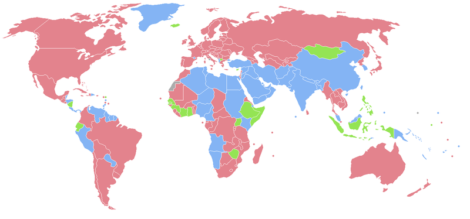

Why Diversity Matters
Hi!
- Director of Engineering, Refinery29
- Technical Architect, LBi NYC
- Lead Developer, WorkHabit
WHAT THIS IS NOT ABOUT
- SendGrid / Adria Richards / Playhaven
- Freedom of Speech
- Affirmative Action
What's a team?
- Developers
- 1+ PM
- Tech lead
- 3 – 4 creative / editorial / UX
- Clients / stakeholders
- QA
- Mystery people
What's a team?
- Developers
- 1+ PM (ish)
- Tech lead
3 – 4 creative / editorial /UXClients / stakeholders- QA
Mystery people
POP QUIZ #1
What percentage of people in the world are women?

50 - 52%
What percentage of people "in tech" are women?
18 - 23%
CIO: 9%
POP QUIZ #2
What percentage of people in the US are non-white?
Caucasian/European American: 63%
Hispanic or Latino: 16%
African American: 12%
Asian: 4%
"Other": 5%
What percentage of people "in tech" are non-white?
?????????
MYTHS
Myth #1
More Babies == Fewer Women
Myth #2
Women/Minorities just don't like it.
- access to education
- family support
- cultural expectations/dependencies
- money
- MORE
WHY DIVERSITY
Diversity Helps your Business
IT'S GOOD FOR MONEY
40% less VC funding needed
Statistically more successful initial public offerings
NO, REALLY GOOD
44% more profitable than median in industry
34% greater ROI in IT companies with female directors
IT'S GOOD FOR IP
(WHICH IS GOOD FOR MONEY)
mixed-gender teams' patents cited 26 - 42% more often
Builders represent users
Grow Marketshare
New Perspectives on Problems
RESIST GROUPTHINK
the existence of diversity
INNOVATION!!!
85% of companies agree diversity is crucial to innovationAttract and Retain
Better Developrs
How do I find them!?
LOOK
FOR
THEM
Wanting vs Tolerating

In the meeting...
and the chatroom
and the standup
and the welcome lunch
and the ________.
You're Too Sensitive!!
Political Correctness
REPLACE IT WITH "RESPECT FOR MY COLLEAGUES"
Now, I'm not a [racist, sexist] but...
Oh, I just assumed...
I don't know how much you know about...
Those people always ...
- gossip
- sit together
- eat lunch together
Death by 1,000 Cuts
You've offended me
- Apologize for saying something offensive
- Don't do it again
- BONUS POINTS: understand